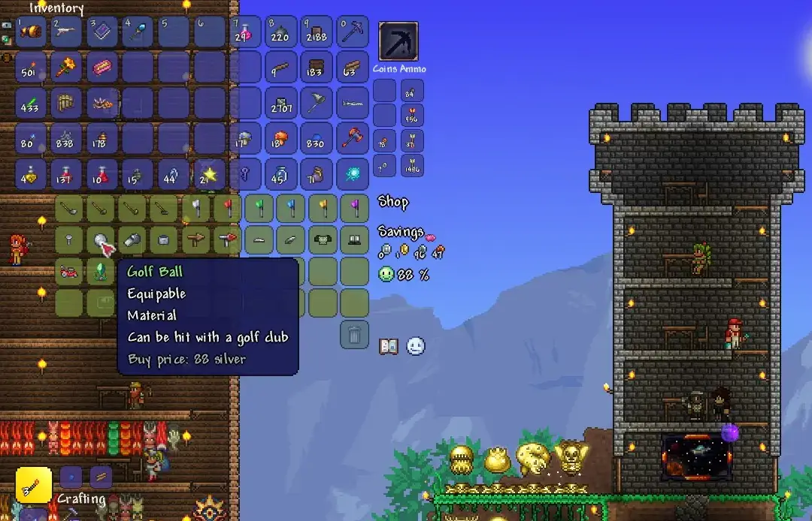
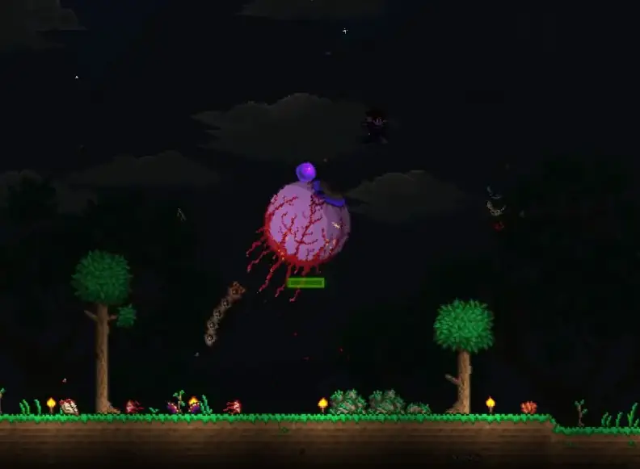
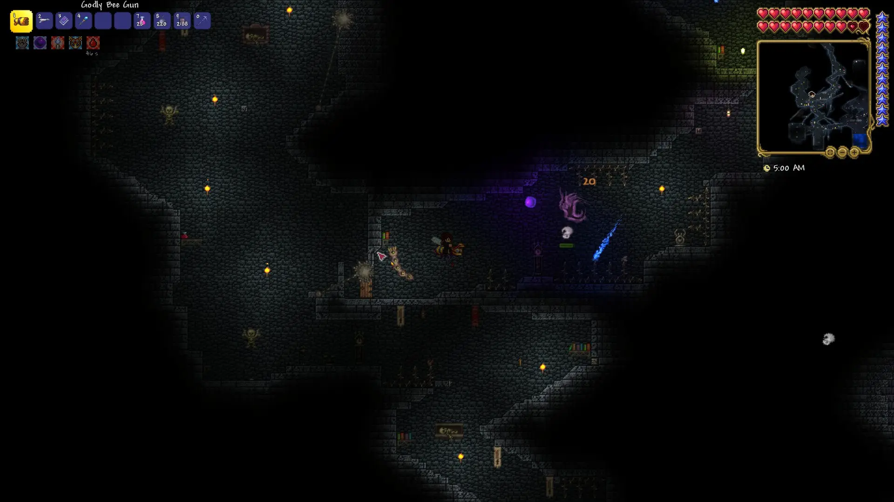
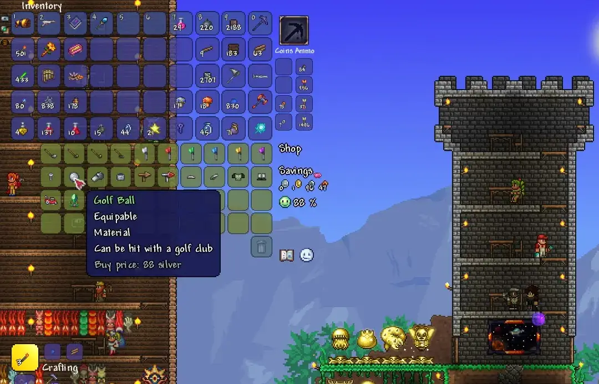
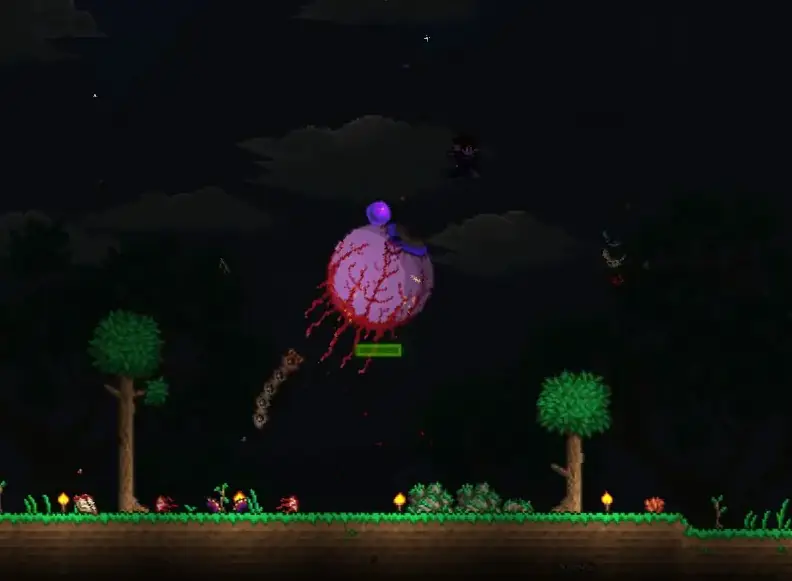
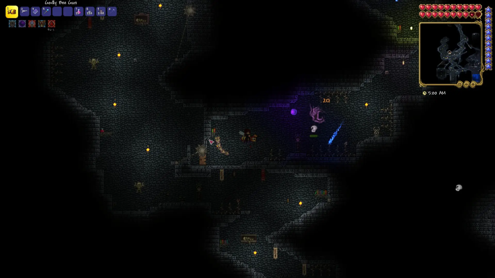

Terraria
Terraria initially launched in 2011 on May 16th. There are no set goals, like any sandbox style game, but there is lots of progression. The game has 33 bosses in total. Not all have to be defeated to progress to the final boss, but all unlock new content. The game includes tons of side-content, including golf! There are so many secrets and features to keep anyone interested for hours.
- Released: 05/16/2011
- Developed by: Re-Logic
- Published by: Re-Logic, 505 Games
- Made with: Microsoft XNA game framework
{kind=link}
There's always lots to do in Terraria. From golfing to mining, this game has it all!
The game progresses and unlocks more content as you defeat bosses. Not every boss needs
to be defeated, but they all give great gear or unlocks as they are defeated. To get
started in Terraria, as with any of these sandbox survival games, you chop trees to make
a crafting table where you can start making other gear. Then you can hit the caves or get
to exploring to find more powerful stuff. As you progress, there are NPCs that arrive and
ask to move in to a home. If you build them a home, they might decide to stay and sell you
all sorts of neat items.
 One such NPC you can unlock is the golfer. The golfer sells anything you need to set up
a golf course of your own. There are all sorts of features, secrets, and fun items you
can acquire in this game. If you get your golf score high enough, the golfer will even
sell a driveable golf cart! Another fun thing about Terraria is all the little pets and
mounts. Some mounts even allow you to fly or travel super fast.

The boss fights all play really differently. Every boss has unique attack patterns and
fighting styles. The first boss starts you off pretty easily. It's known as the Eye of
Cthulhu. The Eye of Cthulhu creates smaller eyes to chase you and has a dash attack that
gets quicker as he dies. For all the information you could need for bosses and more, visit
the official wiki! (linked in the Links section)

Terraria also has dungeons to find. There are a couple larger dungeons and lots of smaller
structures sprinkled throughout the caves. The largest main dungeon is unlocked by defeating
the boss Skeletron. The dungeon is filled with top tier (pre-hardmode) loot, traps, and
skeletons.

One such NPC you can unlock is the golfer. The golfer sells anything you need to set up
a golf course of your own. There are all sorts of features, secrets, and fun items you
can acquire in this game. If you get your golf score high enough, the golfer will even
sell a driveable golf cart! Another fun thing about Terraria is all the little pets and
mounts. Some mounts even allow you to fly or travel super fast.

The boss fights all play really differently. Every boss has unique attack patterns and
fighting styles. The first boss starts you off pretty easily. It's known as the Eye of
Cthulhu. The Eye of Cthulhu creates smaller eyes to chase you and has a dash attack that
gets quicker as he dies. For all the information you could need for bosses and more, visit
the official wiki! (linked in the Links section)

Terraria also has dungeons to find. There are a couple larger dungeons and lots of smaller
structures sprinkled throughout the caves. The largest main dungeon is unlocked by defeating
the boss Skeletron. The dungeon is filled with top tier (pre-hardmode) loot, traps, and
skeletons.

Players might want to choose Terraria over other games if they prefer:
- Boss battles/boss-based progression
- Lots of secrets and some cross-over content
- A little more of a challenge
- Golf!